第三章 Arithmetic for Computer¶
Overflow¶
对于overflow的检查，我们采用double sign-bits的方法来检测，在两操作数A[n,0]和B[n,0]最高位前添加一位0，使得C[n+1,0] = {0,A} + {0,B}。有以下4种情况：
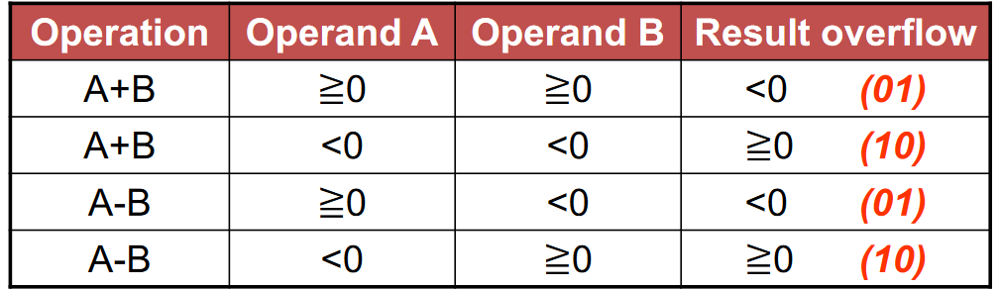
ALU¶
- 最朴素的ALU 可以实现AND,OR,ADD功能
- 带减法的ALU 添加1bit的Binvert信号
-
带comparison的ALU 在MUX中添加接口less进行两个操作数的比大小
若A,B同号，则根据A-B的符号位判断大小；否则直接根据符号判断
-
完整ALU 1. 输入：A、B 2. 控制信号：Binvert、Operation、Carry in 3. 输出：result、overflow、Zero detector 4. 多位输入并行，进位的传播通过行波串行(ripple carry)
-
缺点： 1. redundancy parallel input 2. ripple carry adder is slow
Faster adders¶
Carry look-ahead adder(CLA)¶
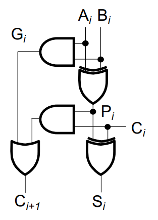
进位的传播可以分解为C[i+1]=G[i]+P[i]C[i]，而G[i]=A[i]B[i]，P[i]=A[i] ^ B[i]
每4个adder一组，内部采用并行输入，减少进位传播产生的延时
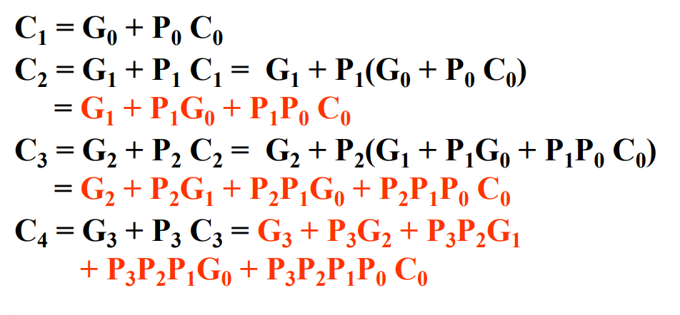
Group Carry Lookahead Logic¶
多个4单元CLA之间再用一个CLA来进一步提速
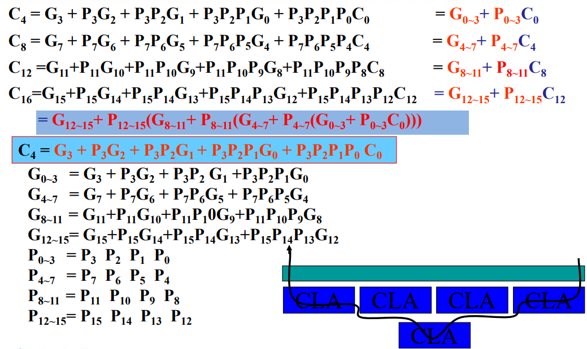 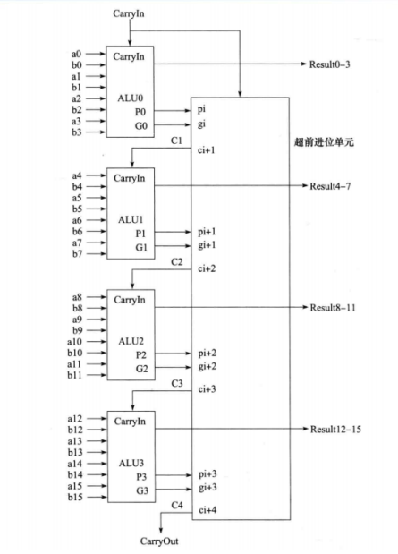
Carry select adder (CSA)¶
将进位为0和1的情况同时计算，当上一个单元的进位传播来时直接用选择器进行选择
Multiplication¶
以 64bit * 64bit = 128bit 为例 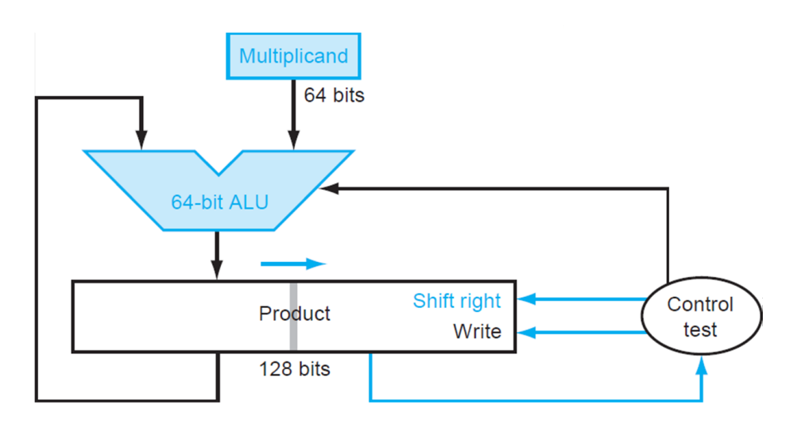 Product左边64bits置零，右边64bits存放multiplier。每次循环若multiplier末位为0，则Product整体右移，若为1则将64bit的multiplicand加到Product左半边，再将Product整体右移
signed multiplication¶
- 基本法：转为绝对值相乘，再转回正确符号
- Booth's algorithm 对于N位乘数Y，布斯算法检查其2的补码形式的最后一位和一个隐含的低位，命名为y[-1]，初始值为0。对于y[i], i = 0, 1, ..., N - 1，考察y[i]和y[i - 1]。当这两位相同时，存放积的累加器P的值保持不变。当y[i] = 0且y[i - 1] = 1时，被乘数乘以2^i加到P中。当y[i] = 1且y[i - 1] = 0时，从P中减去被乘数乘以2^i的值。算法结束后，P中的数即为乘法结果。
booth algorithm
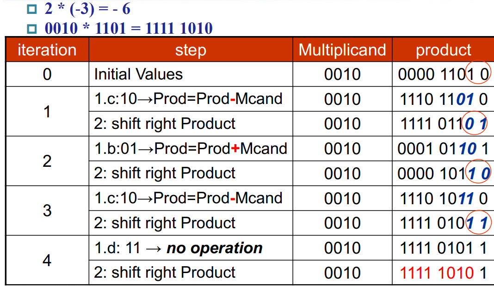
faster multiplication¶
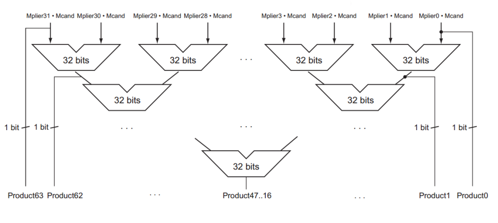
division¶
- 64bit_dividend / 64bit_divisor = 64bit_quotient ······ 64bit_remainder
- 流程： 128bit的remainder右半设为dividend。
每次循环先将128bit的remainder左移，然后减去divisor。
若结果小于0，加回去，quotient（remainder末位）设为0；大于0，quotient末尾设为1。然后quotient左移1位。循环64+1轮之后，将quotient往右移回1位
由于除法是从高位开始减去divisor，所以divisor每次右移<=>dividend每次左移。64次循环后remainder左半为remainder，右半为quotient
Example
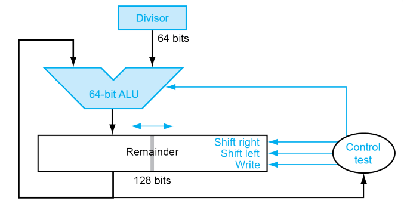 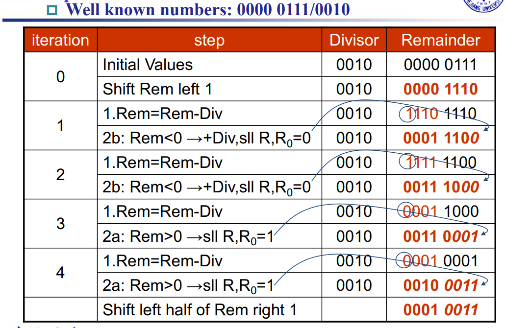
对于signed division，余数与被除数保持同号
Floating point numbers¶
- single precision 1bit sign + 8bits exponent + 23bits significand
- double precision 1bit sign + 11bits exponent + 52bits significand
Note
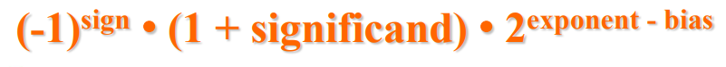 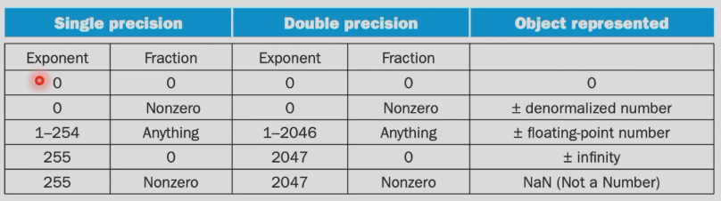
guard, round, sticky bit¶
The guard, round and sticky bits are used to determine if you must round, i.e. if you must remove some trailing bits from a value. The first two of the bits to be removed are the 『guard』 and 『round』 bit, respectively. The 『sticky』bit is simply 1 if any of the other bits is 1. The combination of these three bits governs if the value of the bits that remain must be incremented by 1 or not. -- stackoverflow